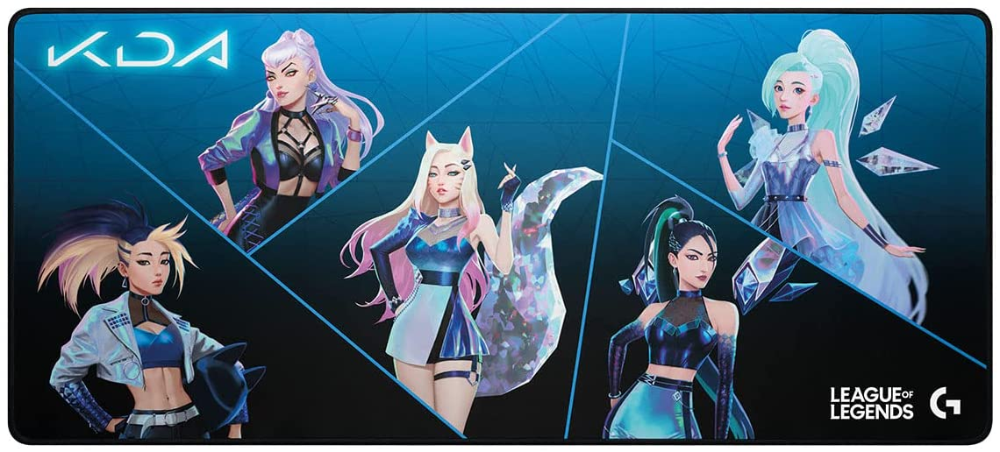

Logitech G840 K/DA XL Alfombrilla de ratón para Gaming - 3 mm de Grosor,
Base de Goma Estable, Equipo de Juego Oficial de League of Legends

$999.00
Detalles del producto
Marca:
Logitech
Tamaño:
XL
color:
KDA Edition
Material:
Caucho
Grosor del artículo:
3mm
Acerca de este articulo
- Juega a tope: la alfombrilla de ratón para gaming G840 K/DA está diseñada con el arte oficial del universo alternativo
de League of Legends K/DA para una experiencia de juego completa y envolvente. - Alfombrilla de ratón XL: 900 X 400 mm y una altura de 3 mm te permite colocar tu teclado en más posiciones, sin interferir
con tu ratón, para más opciones y mayor comodidad.. - Superficie ajustada al rendimiento: precisión y consistencia al proporcionar imágenes óptimas del sensor para traducir el
movimiento del ratón en movimiento del cursor incluso a altas velocidades. - Fricción moderada: mouse pad que permite sentir el movimiento del ratón y apuntar con precisión por medio de la memoria muscular
Optimiza pequeños movimientos rápidos y control a baja velocidad. - Base de goma: los jugadores con DPI bajos realizan movimientos de mano rápidos y amplios, mientras que la base de goma mantiene
la alfombrilla en su lugar evitando que la tela se amontone. - Portátil: G840 es lo suficientemente duradero y flexible como para enrollarlo y colocarlo en el tubo de transporte incluido;
llévate el ratón y el teclado cómodamente.